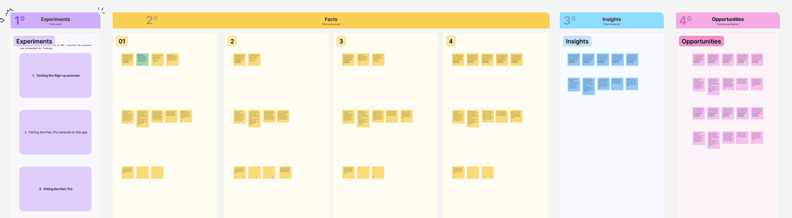
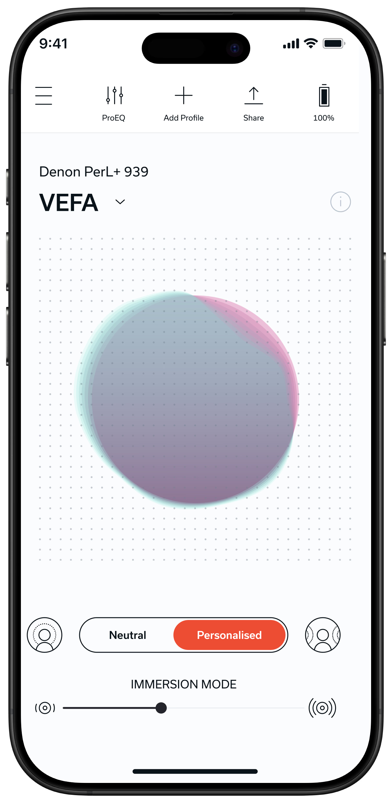
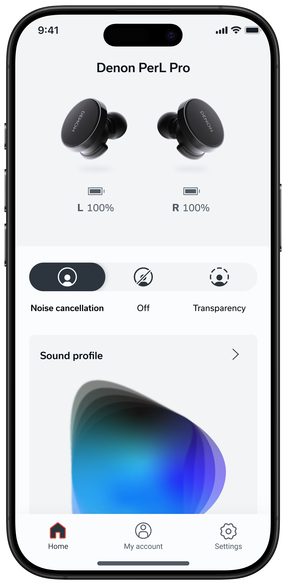
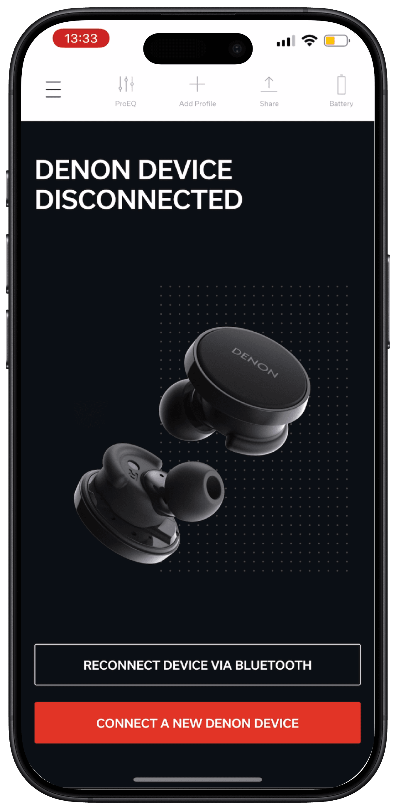
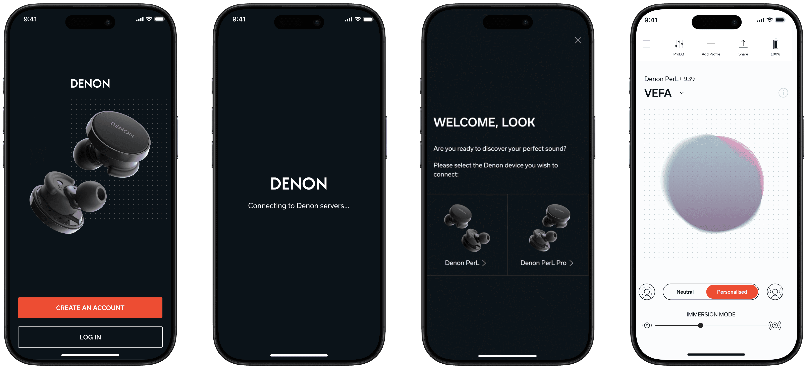
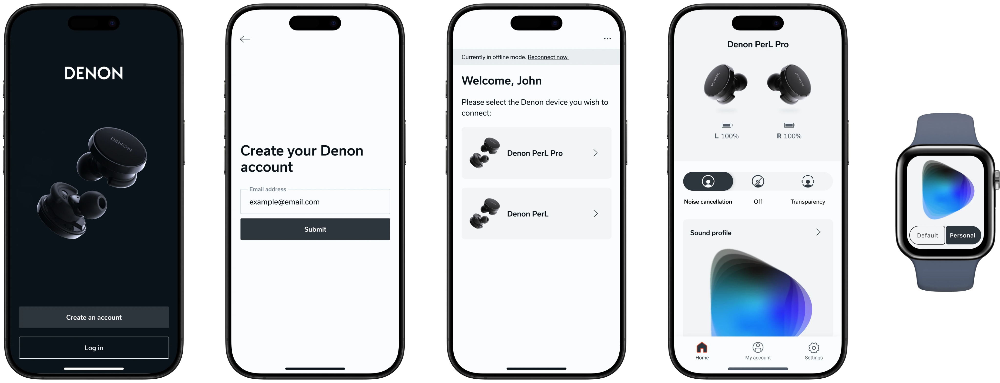

01
Brand identity & principles
Aligned product and brand principles with the design team to set a shared foundation.
Multi-touchpoint audio system
One design language spanning visual, motion, sound and voice — carrying a 115-year-old audio brand from a functional utility into a premium, personalised experience worthy of the hardware.
01 — Context
The experience had to reflect that history and legacy, yet feel forward-looking and unafraid of technology. My job was to hold both at once.
After Denon acquired Nura, the PerL Pro app needed to move off inherited foundations and onto the requirements of the Denon brand identity and app experience.
Challenge
Honour a heritage of craftsmanship while building an experience that feels modern, premium and technically ambitious.
My role
Lead product designer across UX, UI, motion and sound — aligning brand, hardware and engineering into one language.
Status
App in progress · Automotive HMI at concept · Visual language shipped and in use across surfaces.
02 — Scope
One system extending across platforms and sensory experiences — a cohesive design language that stays recognisably Denon whether you see it, feel it, or hear it.
Aligned product and brand principles with the design team to set a shared foundation.
One dot-grid, type scale and colour system applied consistently across every surface.
Led app design with engineering, hardware and spec teams on software alignment.
Behaviour and feel enhanced through product animation and app transitions.
Led the sound and voice-prompt workstream for both product and brand experience.
Led concept work extending the system into the in-car interface.
03 — Audit & discovery
The PerL Pro app carried Nura's bones. My role was to redesign the UX, UI, animations and flows — turning a functional utility into a premium, personalised audio experience worthy of the hardware. But first I had to identify the issues through an audit, then validate my assumptions through user testing.
A significant number of users struggled with pairing. Switching between Bluetooth settings and the app caused confusion and uncertainty about connection status.
The loading indicator during profile setup felt lengthy and unclear — users couldn't tell how long it would take or what stages it involved.
After profile creation, users wanted to hear the difference with their own music — the provided demo didn't showcase the feature's true value.
During the initial feature introduction, several users reached for volume and couldn't adjust it — a small gap that soured the first impression.

Eight moderated sessions on the existing, re-skinned Nura app, cross-checked against public feedback on the app stores. Every finding was pressure-tested before it shaped the redesign — assumptions in, evidence out.
04 — Process
Understand and analyse produced the audit above. Everything after it turned those findings into flows, screens and a design system engineering could build from.
User testing sessions to uncover major and minor pain points in the existing, re-skinned Nura app.
Testing results and online feedback analysed, and every major and minor point of improvement listed.
Changes labelled, prioritised and taken into action.
Major flows — sign up, setup and profile creation — created.
After aligning with internal stakeholders, screens were created, tested and built into a flow.
Finalising designs, adding the last touches and creating the animations.
Design files tidied, with screens and components integrated into the design system and ready for development.
Steps 03 and 04 ran in real time with PM, engineering and infrastructure — building flowcharts together, identifying technical no-go areas early, and exploring what was actually feasible before it reached high fidelity.
05 — Evolution

Immersion slider buried the core value — the headline personalisation was hidden behind an abstract control.
No clear connection status — users couldn't confirm the earbuds were connected at a glance.

Device status front-and-centre — live L/R battery removes all doubt about connection.
One-tap noise control — Cancellation · Off · Transparency, no digging through menus.
Sound profile promoted to a tappable, visual card — the personalisation finally feels premium.

A dead end dressed as a screen. The only way back was Bluetooth settings — the switching that testing showed left people unsure whether they were connected at all.
Pairing is walked through in the app itself, with the case and button illustrated at each step and connection state shown continuously.
The wait gets acknowledged and explained — the AAT mark, copy rotating through what the measurement is for, and stage text moving from "Running a quick measurement of your hearing…" to "Processing measurement…". The ring fills, but never says how far along it is.
The missing half of finding 02. A live percentage answers how long, the ring takes on the brand's organic form, and the whole sequence is half the length — 0:10 against 0:20.
06 — The app, end to end
Sign-in, account creation, device selection and the home experience share one visual system — and it carries cleanly onto the watch.


07 — Visual language
Typography
Archivo · Display & UI — 400 / 700 / 900
Space Mono · labels & data
Signature motif
The dot-grid recurs across empty states, loading and personalisation — a quiet through-line for the whole system.
08 — Sound, voice & motion
Led the sound and voice-prompt workstream for both the product and brand experience — earcons, confirmations and a spoken guide through setup.
Behaviour and feel enhanced through product animation and app transitions — the personalisation orb, connection states and screen-to-screen continuity.
09 — Automotive HMI
ConceptThe same language — type, dot-grid and sound — carried onto the in-car display, so the Denon experience stays continuous from ear to dashboard. Shown as a working interface at CES 2025.
10 — Post-launch reception
The clearest read on whether the audit findings were the right ones: what the press said about the app before the redesign, and what they said about it after.
As much as I like the app, it's not a polished experience. The app takes a loooong time to load.
The app has a clean UI. You can adjust 'immersion', which basically narrows and widens the soundscape… it blew me away.
Load time and the forced account gate were the two complaints the inherited app drew publicly — both traced directly to findings 01 and 02 in the audit.
Where it stands